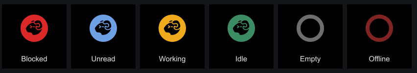
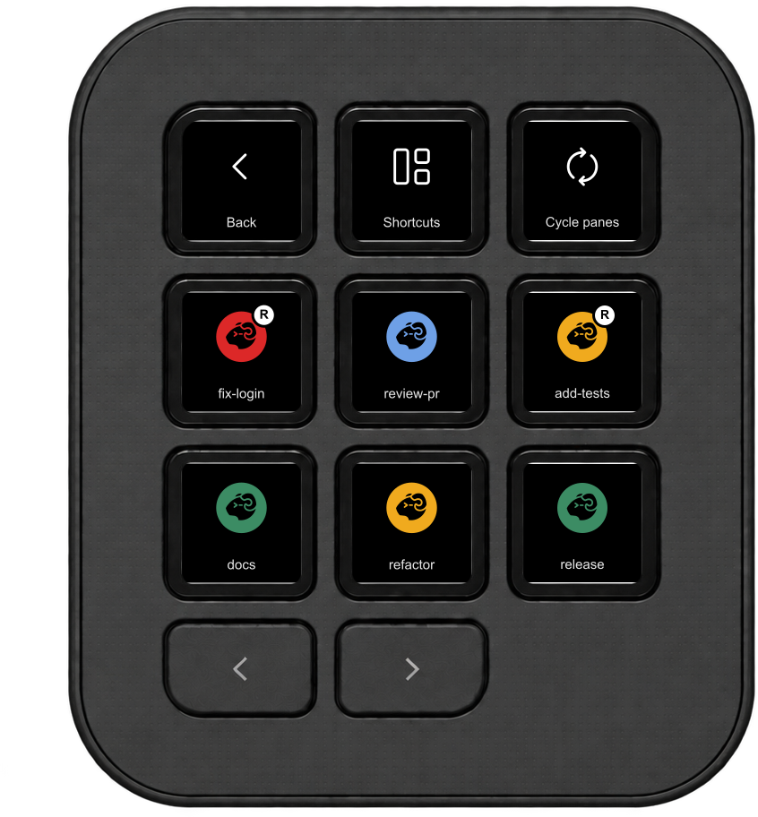
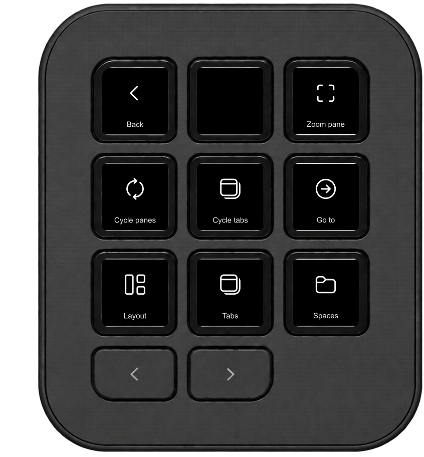
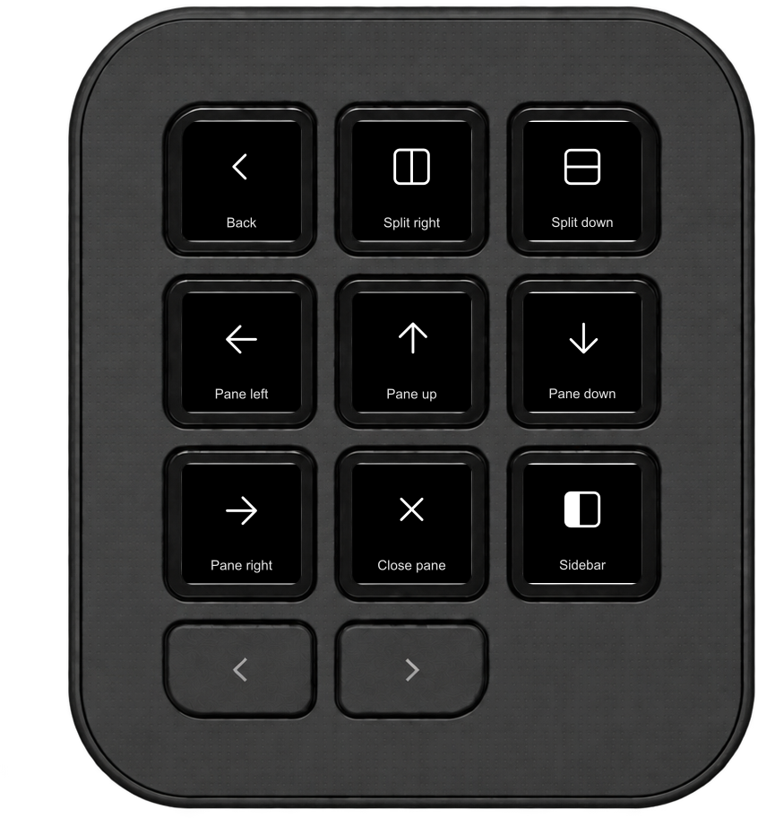

Herdr App agents on the MX Creative Keypad
Monitor local and remote agents together on the Logitech MX Creative Keypad with the Herdr desktop app. Live state colors, pane navigation, and a small R badge for agents in spaces on other machines.
Download HerdrAppKeypad.lplug4 Source on GitHub
Diagrams drawn from the plugin's colors and icons, not photos. Using Herdr TUI instead? See Herdr TUI Keypad.
Key colors

| Color | Meaning |
|---|---|
| Red | Blocked: the agent needs your input. |
| Blue | Done and not yet seen in the app. |
| Amber | Working. |
| Green | Idle and ready. |
| Grey / dark red | Empty slot / the Herdr app is not running. |
The Agents folder key shows the highest-priority state: blocked, unread, working, then idle.
Agents at a glance

Assign Recent Agent 1–9 directly, or open the Agents folder to browse live agents. Keys carry the same names as the app's agents list: the tab's session name, or the terminal's title for unnamed tabs. A press focuses the agent; on Recent Agent keys and inside the Agents folder, a long press offers a confirmation before closing its pane. Agents in spaces on other machines carry a small R badge.
Sub-agents: an agent that started others shows a badge with their number, colored by the most urgent child: blue if one finished unseen while the parent still works, red if one is blocked, amber if one works, green if all are idle. Hold it in the Agents folder to list them, each with its own state, plus Back and the parent itself. Inside that detail, hold the parent's own key or a child with a pane, release, then press Close? within three seconds to confirm closing that pane. There is no separate Close key. Children reachable through a parent in the folder appear only inside that parent's detail, without duplicate keys at the top level. Recent Agent keys and Next/Previous agent still include every agent with a pane. Press a sub-agent to focus it, or peek at it when it has no pane; children without panes cannot use the pane-close gesture. On Recent Agent keys a hold still prepares a confirmed pane close.
The app already connects to your machines, so local and remote agents share one list and are focused and closed the same way. No SSH or machine setup in the plugin.
Shortcuts


Zoom a pane, cycle panes, jump to the next agent, open the app's Go to picker, split the layout, move between panes by direction, toggle the sidebar, and move between tabs and spaces. Next/Previous agent cycle through all agents with panes in space, tab and pane order, including kept sub-agents, and wrap at either end. The cycle follows your current focus on every press and stays in the same order when statuses change. This avoids a Herdr App 0.1.16 issue where native agent navigation can return to the start after a kept sub-agent and miss later sessions. Each shortcut is also an individual action. To close the focused pane, hold Close pane, then press Close? within three seconds.
Every key runs one of the app's own commands over its control socket, the one herdr-app do uses. Nothing is typed into the window, so no Accessibility permission is needed.
Sub-agent relationships come from herdr-core's parent metadata. A parent with a pane in this window shows its sub-agent count; hold its key in Agents to open the detail. If the parent runs outside this window, it has no key here, and its children with panes appear individually.
Configuration
Optional, in ~/.config/herdr-app-logi-plugin/config.json: {"activateApp": false} keeps the Herdr window where it is instead of bringing it to the front on each press.
Install
- Requirements: macOS, the Herdr desktop app 0.1.16 or later, Logi Options+ with Logi Plugin Service 6.4 or later, and an MX Creative Keypad or compatible Loupedeck.
- Download
HerdrAppKeypad_<version>.lplug4from the latest release. - Double-click it to install it with Logi Options+, then add the actions to your Keypad.
Also for VS Code and Cursor
Use the same Keypad to monitor agents in VS Code and Cursor.